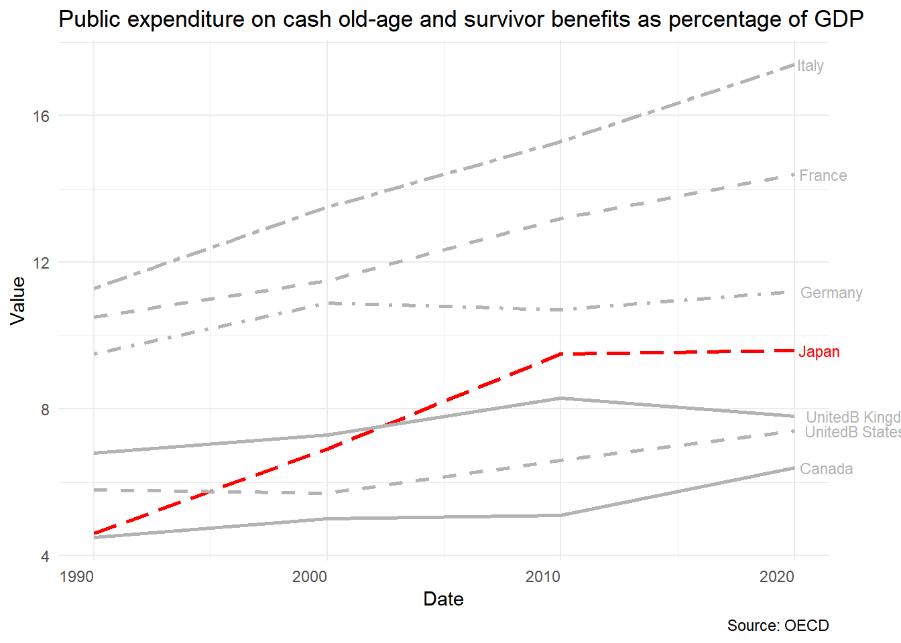

Introduction
- Demographics changes
- Economic impacts
- Government responses
Japan population
Warning: Using `size` aesthetic for lines was deprecated in ggplot2 3.4.0.
ℹ Please use `linewidth` instead.
Driver of population growth
Economic impacts
Economic growth: population, participation rate, labor productivity
Saving rate: larger number of elderly dissavers
Pension system: PAYGO with a reserved fund
Saving rate
Warning: Removed 41 rows containing missing values or values outside the scale range
(`geom_line()`).
- high growth rate is more likely to increase aggregate saving, constraint on borrowing for the very young increase saving rate (unexpected future growth)
- Underdeveloped Social Security System (Japan after 1973, theoretically sound but not confirmed empirically)
- High cost of housing, down payment (impact not large)
- Intentional bequests
Saving and Investment
\[
Saving − Investment = {Gov.deficit} + {Trade.surplus}
\] - high saving rates
- high level of investment, faster economic growth
- finance government deficits
- capital outflow, a world lender in long run
Pension Contribution Rate
Government Responses
- reduce the benefits
- raise the contribution rates (already 18.3% maximum)
- increase the injection from the general tax revenues
- increase returns on the GPIF portfolio to cash out
Employment rates of older workers
Female labor participation
Warning in geom_line(data = fe[is_japan != "Japan"], aes(x = date, y = value, :
Ignoring unknown aesthetics: shape
- Japanese women have fewer children, out of the labor force for a shorter time
- initiatives to encourage women not to quit their job during the childbearing and child-care years in the 2010s may have been effective
Female participation
- improve the public support system for child-rearing,
- gender diversity as a selection criterion for government procurement,
- promotion of women’s empowerment in the private sector,
- advocacy for work-life balance
Female participation vs Fertility Rate
- increasing labor participation of women inevitably further reduces the fertility rate
- a negative correlation between female labor participation and fertility in the 1970s and 1980s
- after 1990s the pattern has changed (at least for developed countries)
- constraints on women deciding how to allocate effort and time between home and career
References
- Ito and Hoshi (2020) Chapter 8, 10
- Okamoto, A. (2025). Pension reform for an aging Japan: Welfare and demographic dynamics. Journal of the Japanese and International Economies, 78, 101390.
- OECD (2025), Pensions at a Glance 2025: OECD and G20 Indicators, OECD Publishing, Paris, https://doi.org/10.1787/e40274c1-en.
- Ellison and Mullin (2014)
- Feyrer, Sacerdote, and Stern (2008)
- Rosenbluth (2007, 21)
- Data link:
- https://databank.worldbank.org/metadataglossary/health-nutrition-and-population-statistics/series/SP.POP.DPND.OL
- Labour Force Survey (https://www.e-stat.go.jp/)
- https://www.esri.cao.go.jp/en/sna/data/kakuhou/files/2023/pdf/point_flow_en20241223.pdf
- https://ourworldindata.org/grapher/fertility-and-female-labor-force-participation?time=1980
Social spending
